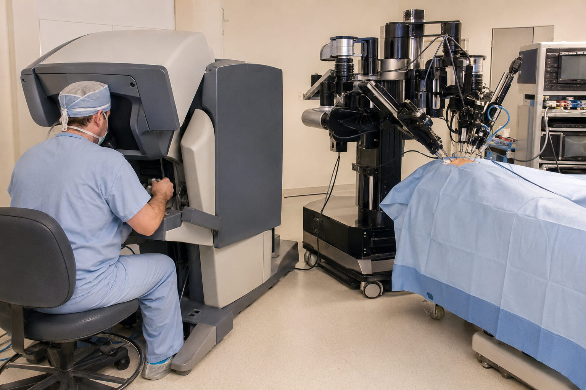
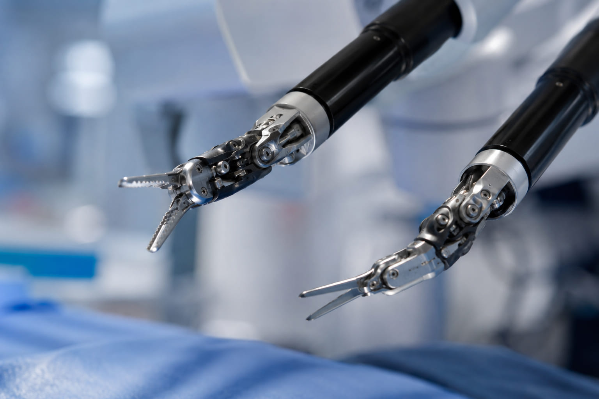
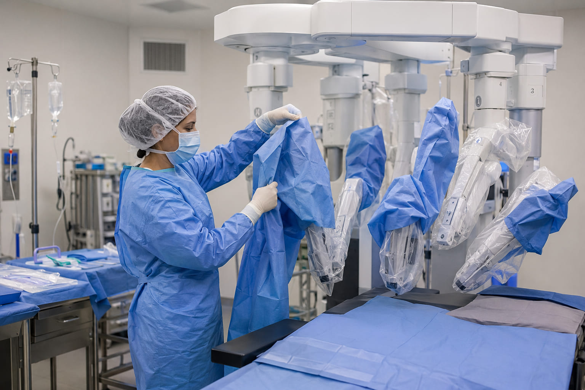
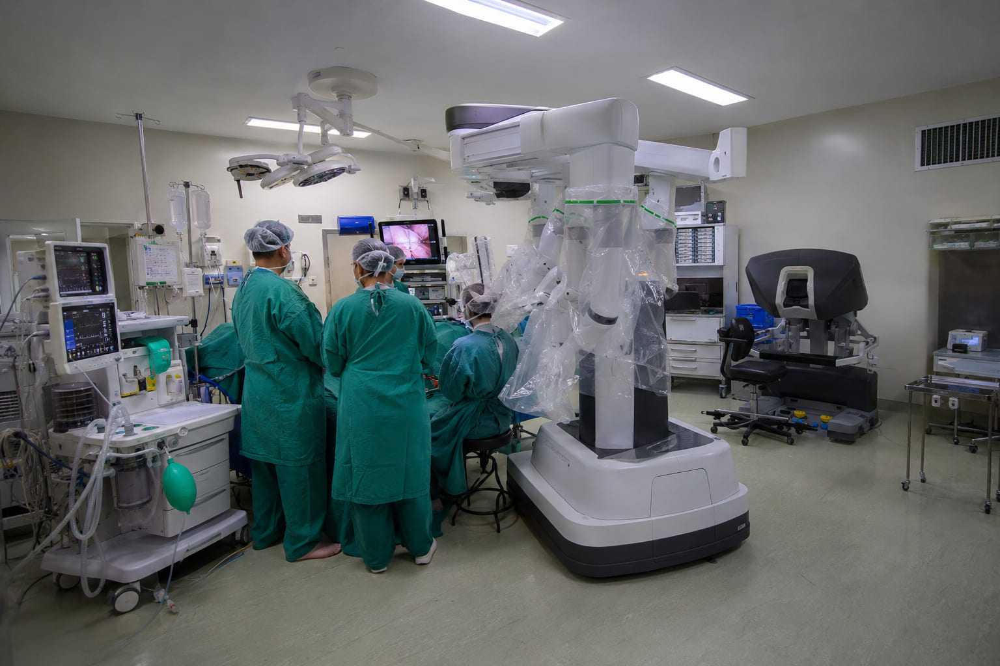
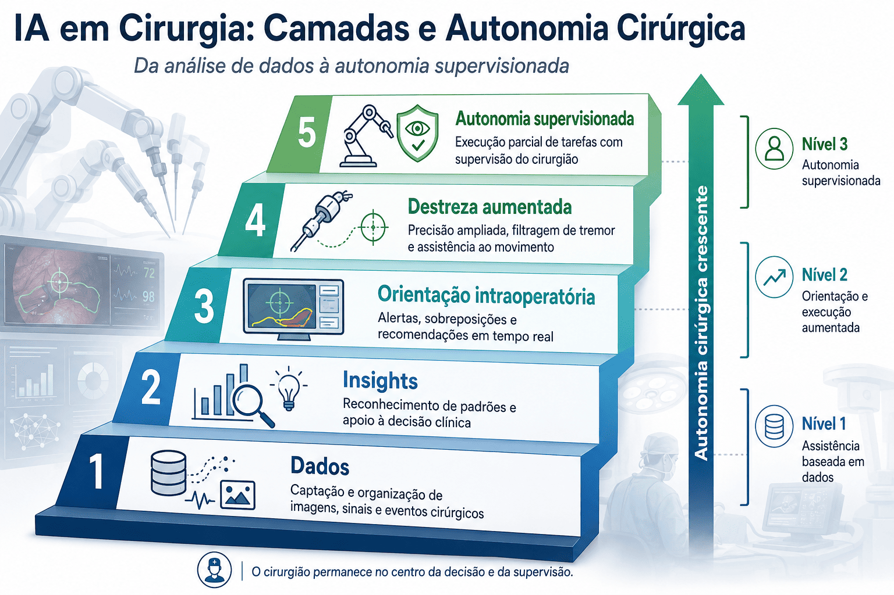

O que é engenharia clínica — e por que ela é a espinha dorsal desta história
Um robô cirúrgico não é só uma máquina em uma sala de operação. É um sistema vivo, sustentado por três formações que raramente aprendem juntas na graduação, mas que precisam operar como uma só equipe todos os dias.
Medicina
Decide a indicação cirúrgica, opera o console e responde clinicamente pelo paciente.
Enfermagem
Prepara, monta, protege e acompanha o paciente e o sistema em todas as fases do perioperatório.
Engenharia clínica
Garante que o equipamento funcione com segurança, disponibilidade e conformidade regulatória.
A engenharia clínica (ou engenharia biomédica hospitalar) é a área responsável por gerenciar o ciclo de vida completo de tecnologias médicas de alta complexidade — da compra à manutenção, da calibração ao descarte — e é o elo que conecta esses três mundos.
De projeto militar a padrão-ouro da cirurgia minimamente invasiva
O nome "da Vinci" é uma homenagem a Leonardo da Vinci — não por acaso: o mesmo espírito de observação anatômica precisa e engenharia aplicada ao corpo humano.
A tecnologia por trás do da Vinci nasceu de pesquisas do SRI International (Stanford Research Institute), financiadas em parte pelo Exército e pela DARPA dos Estados Unidos, que buscavam desenvolver telecirurgia — a possibilidade de um cirurgião operar um paciente remotamente, inclusive em campos de batalha.
Em 1995, a tecnologia foi licenciada e deu origem à empresa Intuitive Surgical. Cinco anos depois, em 2000, o primeiro sistema da Vinci recebeu aprovação da FDA para uso cirúrgico geral — o marco que inaugura a era da cirurgia robótica assistida comercialmente disponível.

Os modelos da Vinci: uma linha do tempo de decisões de engenharia
Cada geração resolveu um problema real da anterior. Entender essa progressão ajuda a enxergar o robô não como "uma máquina", mas como uma sequência de escolhas de design guiadas por limitações clínicas.
Compare os modelos em detalhe
da Vinci Standard
- Primeira plataforma comercial de cirurgia robótica assistida.
- Introduziu visão 3D estereoscópica e instrumentos EndoWrist com "punho" articulado.
- Coluna central única, braços paralelos — configuração rígida, exigia reposicionamento manual complexo.
- Uso majoritariamente urológico no início (prostatectomia radical).
da Vinci Si
- Console dual (dois cirurgiões podem visualizar/operar simultaneamente) — voltado ao ensino.
- Endoscópio de 12mm com invólucro descartável específico.
- Exoesqueleto baseado em coluna vertical volumosa; colisões externas entre braços eram comuns em cirurgias multiquadrante.
- Foi o modelo adquirido pelo INCA em 2012, marco da cirurgia robótica no SUS.
da Vinci Xi
- Arquitetura em lança (boom-mounted): braços mais finos, acoplamento angular, menos colisões externas.
- Endoscópio de 8mm, mais fino e sem invólucro, podendo ser trocado entre qualquer um dos 4 braços.
- Permite docking único para cirurgia em múltiplos quadrantes abdominais — grande ganho em colorretal.
- Imagem por fluorescência Firefly para visualizar vasos, ductos biliares e perfusão tecidual em tempo real.
- Hoje é o sistema multiporta mais usado no mundo e o mais comum no Brasil.
da Vinci SP
- Um único braço robótico entrega câmera + 3 instrumentos por uma porta de ~25mm.
- Instrumentos com "punho e cotovelo" alcançam maior amplitude de movimento que a mão humana, permitindo triangulação dentro de espaços estreitos.
- Indicado para próstata, cirurgia transanal colorretal, cabeça e pescoço (TORS) e tórax.
- Elimina colisões externas entre braços por usar apenas um.
da Vinci 5
- Force Feedback: primeira vez que o cirurgião recebe retorno tátil (resistência dos tecidos) em tempo real.
- Mais de 10.000x a capacidade computacional do Xi — abre espaço para análise de dados intraoperatórios e integração com IA.
- Ergonomia aprimorada no console em relação a todas as gerações anteriores.
- Ainda em fase inicial de disseminação global; representa a fronteira atual da engenharia clínica em robótica cirúrgica.
Três componentes, uma mesma cirurgia
É importante frisar: o da Vinci não opera de forma autônoma. Ele reproduz, com precisão ampliada e sem tremor, os movimentos das mãos do cirurgião — o robô é uma extensão do gesto humano, não um substituto da decisão clínica.
Console do cirurgião
Onde o cirurgião senta, visualiza a imagem 3D em alta definição e movimenta os controles manuais que traduzem seus gestos para os braços robóticos, com filtragem de tremor e escala de movimento ajustável.
Carrinho do paciente
Contém os braços robóticos acoplados (docking) ao paciente, que sustentam os instrumentos EndoWrist e o endoscópio. É aqui que a arquitetura mudou de coluna central (Si) para lança (Xi).
Torre de visão/imagem
Processa o sinal de vídeo 3D, gerencia iluminação, insuflação de CO₂ e recursos de imagem avançada (como fluorescência Firefly), e é o ponto de referência para a equipe de enfermagem em sala.

O que faz o EndoWrist diferente de um instrumento laparoscópico comum?
Instrumentos laparoscópicos convencionais são hastes rígidas: perdem articulação e "triangulação" ao entrar por uma única incisão. Os instrumentos EndoWrist têm punho e, nas versões mais recentes, cotovelo articulado — reproduzindo (e superando) a amplitude de movimento da mão humana dentro do corpo do paciente, mesmo através de portas de poucos milímetros.
O que muda de fato na mesa de cirurgia
Comparada à cirurgia aberta e à laparoscopia convencional, a plataforma robótica reorganiza a relação entre visão, precisão e esforço físico do cirurgião.
| Aspecto | Cirurgia aberta | Laparoscopia convencional | Cirurgia robótica (da Vinci) |
|---|---|---|---|
| Visão | Direta, 2D, campo amplo | 2D, monitor, câmera fixa | 3D em alta definição, com ampliação de até 10x |
| Instrumentos | Manuais, sem restrição | Rígidos, sem articulação | Articulados (EndoWrist), maior amplitude que a mão |
| Tremor | Presente | Presente, amplificado pela alavanca | Filtrado eletronicamente |
| Ergonomia do cirurgião | Fadiga postural alta | Fadiga alta (postura em pé, instrumentos longos) | Cirurgião sentado, postura controlada |
| Incisões | Grande incisão única | Múltiplas incisões pequenas | Múltiplas incisões pequenas ou porta única (SP) |
| Tempo de internação (evidência variável por procedimento) | Maior | Intermediário | Frequentemente menor, especialmente em cirurgias complexas |
Manutenção: o trabalho invisível que mantém o robô seguro
Um sistema de R$ 10 a 14 milhões não sobrevive sem uma estrutura robusta de engenharia clínica. É aqui que a formação em engenharia biomédica se torna estratégica dentro do hospital.
Qualificação (IQ/OQ/PQ)
Instalação, operação e desempenho do equipamento são validados formalmente antes e durante o uso clínico, seguindo normas ISO 13485 e RDC 751/2022 da ANVISA.
Manutenção preditiva
Monitoramento de desgaste (especialmente dos instrumentos, que têm número limitado de usos) e planejamento de paradas programadas, muitas vezes com sensores IoT hospitalares.
Suporte intraoperatório
Em falhas durante o procedimento, o engenheiro clínico (ou o suporte técnico do fabricante) precisa resolver o problema em tempo real, com registro documentado do evento.
Quanto custa manter um da Vinci funcionando?
No Brasil, o contrato de manutenção anual de um sistema Xi gira em torno de R$ 800 mil a R$ 1,5 milhão — obrigatório e, na maioria dos casos, atrelado ao próprio fabricante, o que gera dependência tecnológica (o chamado vendor lock-in). Some-se a isso o custo dos instrumentais descartáveis, que têm um número limitado de usos por segurança e rastreabilidade.
A enfermagem perioperatória: a competência que sustenta a cirurgia robótica
Estudos da SOBECC (Associação Brasileira de Enfermeiros de Centro Cirúrgico) mostram que a atuação de enfermagem em cirurgia robótica se concentra principalmente nas fases pré e intraoperatória — mas se estende por todo o ciclo do cuidado.

O checklist validado pela SOBECC organiza as atribuições da equipe de enfermagem em três etapas — Sign In, Time Out e Sign Out — adaptando o protocolo de cirurgia segura da OMS especificamente para procedimentos robô-assistidos, incluindo itens exclusivos como especificação da plataforma robótica e lado da mesa em que o robô será alocado.
- Anamnese e avaliação do paciente
- Checagem e dupla conferência de instrumentais robóticos e órteses/próteses
- Reserva de hemoderivados e vaga de UTI, quando indicado
- Ligar e testar o sistema da Vinci, conferindo cabos e componentes
- Draping (encapamento) do carrinho do paciente com capas específicas
- Posicionamento cirúrgico e proteção de proeminências ósseas
- Time out com toda a equipe antes da incisão
- Docking (acoplamento) e acompanhamento contínuo do procedimento
- Registro de tempos de uso das pinças robóticas (vida útil limitada)
- Suporte em falhas do sistema, com registro fotográfico do evento
- Undocking (desacoplamento) e retirada das capas protetoras
- Conferência de óticas e pinças com dupla checagem junto à CME
- Auxílio na extubação e reposicionamento seguro do paciente
- Encaminhamento à recuperação anestésica ou UTI
- Desligamento e limpeza do sistema robótico
Acesso à cirurgia robótica como questão de gestão estratégica em saúde
Ter a melhor tecnologia disponível não resolve, sozinho, o problema de acesso equitativo. O caso brasileiro mostra como decisões técnicas, políticas e econômicas se entrelaçam.
O caso INCA: pioneirismo no SUS
Em 2012, o Instituto Nacional de Câncer (INCA) adquiriu o primeiro da Vinci Si dedicado ao Sistema Único de Saúde, após um estudo de viabilidade de dois anos e meio conduzido com a COPPE/UFRJ. Até 2022, mais de 2.000 procedimentos robóticos haviam sido realizados pelo SUS na instituição.
Mas a pesquisa acadêmica sobre o caso (Redalyc, 2024) revela um ponto crítico: a incorporação tecnológica muitas vezes carece de critérios claros de custo-efetividade, sendo influenciada por pressão política e relação com fornecedores — um alerta para quem vai gerir tecnologia em saúde pública no futuro.

CONITEC e custo-efetividade
Para prostatectomia radical, o CONITEC projetou economia de até R$ 52,9 milhões em 5 anos no SUS, por redução de complicações e reinternações — dado que embasou a incorporação seletiva da tecnologia.
Equidade e desigualdade estrutural
Custos elevados de aquisição, manutenção e treinamento concentram a tecnologia em grandes centros urbanos, ampliando a disparidade de acesso entre regiões do Brasil — tensão direta com o ODS 10 (Redução das Desigualdades).
Modelos alternativos de financiamento
Hospitais filantrópicos (como o Napoleão Laureano, na Paraíba) vêm destinando parte majoritária das cirurgias robóticas a pacientes SUS via convênios e doações — um caminho paralelo à compra direta pelo poder público.
O futuro: inteligência artificial, autonomia supervisionada e o fim do monopólio
Duas mudanças estão redesenhando o campo neste exato momento (2025–2026): a entrada de concorrentes reais ao da Vinci e a integração progressiva de inteligência artificial ao fluxo cirúrgico.
O fim de duas décadas de monopólio
Por mais de 20 anos, o da Vinci foi a única opção de robótica para tecidos moles nos EUA. Isso mudou em dezembro de 2025: em um intervalo de 13 dias, o FDA liberou o Hugo RAS (Medtronic) e o Versius Plus (CMR Surgical) — sistemas com arquitetura modular, braços independentes e menor ocupação de sala, pensados para viabilizar robótica em hospitais menores. A Johnson & Johnson prepara o Ottava para submissão à FDA em 2026. A expectativa da literatura é que essa concorrência reduza em 30–50% os custos de aquisição e manutenção nos próximos anos.
Uma revisão sistemática (NPJ Digital Medicine, 2024, citada em Sossego Health) analisou 49 robôs cirúrgicos aprovados pela FDA entre 2015–2023: 86% operam ainda no nível 1 de autonomia — o cirurgião controla cada movimento, o robô apenas amplifica e estabiliza. Tarefas autônomas (nível 2, como sutura automatizada) já existem em cerca de 23% das aplicações estudadas; autonomia condicional (nível 3) segue restrita a modelos pré-clínicos e animais.

IA como "pilha de capacidades"
Em julho de 2026, a Intuitive apresentou publicamente seu framework de IA em cinco camadas — de dados padronizados a "autonomia supervisionada" — construído sobre um conjunto de mais de 20 milhões de procedimentos da Vinci já realizados no mundo.
Telecirurgia via 5G
Redes 5G reduziram a latência a níveis clinicamente aceitáveis. Estudos de 2024–2025 já documentaram prostatectomias robóticas realizadas remotamente, a distâncias intercontinentais — e a Intuitive demonstrou telecirurgia ao vivo com Force Feedback compartilhado em julho de 2026.
Novas indicações clínicas
Em janeiro de 2026, o da Vinci 5 recebeu aprovação da FDA para procedimentos cardíacos selecionados assistidos por toracoscopia — ampliando o uso do sistema para além da urologia e da cirurgia geral, que historicamente concentravam a maior parte dos procedimentos.
Questões para refletir
Não há resposta "certa" pronta para estas questões — o objetivo é abrir a discussão em sala de aula ou em grupo de estudo, cruzando as três áreas de formação.
Reflita antes de responder
- Engenharia × ÉticaSe um sistema de R$ 12 milhões só é sustentável em grandes centros urbanos, a inovação tecnológica em saúde está, por definição, fadada a ampliar desigualdades — ou existe um caminho de engenharia (leasing, plataformas mais simples, manutenção compartilhada) que rompa esse padrão?
- Enfermagem × AutonomiaSe a enfermagem hoje assume competências de gestão de tecnologia, segurança e liderança em cirurgia robótica, isso deveria mudar a forma como currículos de graduação em enfermagem tratam (ou não tratam) tecnologia e engenharia clínica?
- Medicina × Dependência tecnológicaO "Force Feedback" do da Vinci 5 devolve ao cirurgião uma sensação que a robótica havia eliminado desde o início. O que isso revela sobre os trade-offs que toda inovação tecnológica em cirurgia carrega — o que se ganha sempre custa algo, mesmo que não apareça de imediato?
- Gestão em saúdeO CONITEC calcula economia futura ao SUS com base em menos reinternações e complicações. Mas esse cálculo geralmente ignora custos de treinamento, obsolescência tecnológica e dependência de um único fabricante. Como avaliar "custo-efetividade" de forma mais honesta?
- InterprofissionalidadeEm quantos momentos deste infográfico uma falha em uma área (engenharia, enfermagem ou gestão) se transforma automaticamente em risco para as outras duas? O que isso sugere sobre como deveríamos formar esses três profissionais — juntos ou separados?
Teste o que você reteve
Cinco perguntas objetivas para checar os conceitos-chave antes de seguir para as referências.